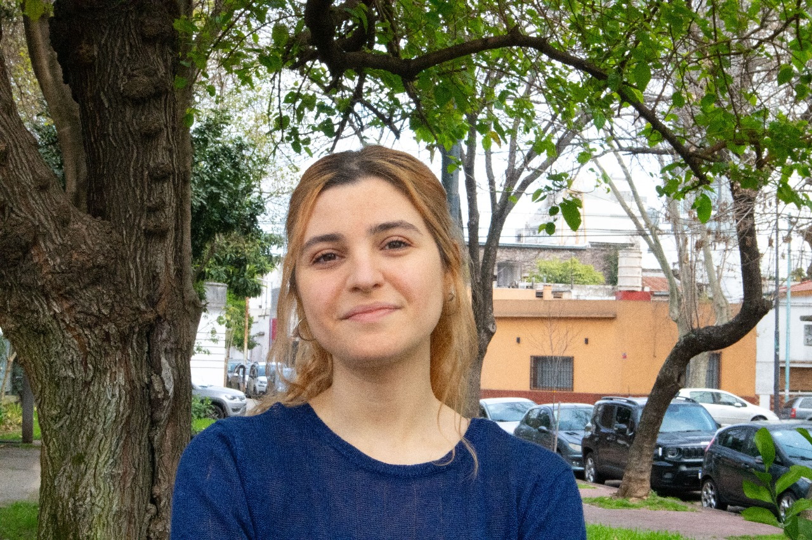

+5
Años de experiencia
+10
Proyectos completados
+20
Clientes felices
+100
Horas de trabajo
Sobre Mí
Actualmente me desempeño como Project Manager, aportando experiencia en la dirección de proyectos de software.
Mi experiencia radica en liderar equipos diversos y asegurar resultados oportunos en cada etapa del desarrollo.